Hatch turns your MacBook's notch into a calm command centre: plan and focus, never miss a meeting, keep your music at hand, and get a nudge only when something needs you.
No account, no subscription. Free until Hatch 1.0 launches, then $4.99 once.
0/61 antivirus engines flagged Hatch on VirusTotal View report →Everything lives in the notch, shows one thing at a time, and gets out of your way.
A simple loop for every workday: decide what matters, focus on it, survive the interruptions, and stop on time.
Start a 25, 50 or 90 minute block from Home or with ⌃⌥F. A ring around the notch fills as time passes, with your task underneath. While you focus, Hatch holds its own alerts until the block ends.
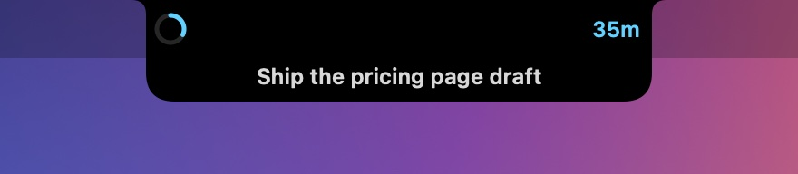
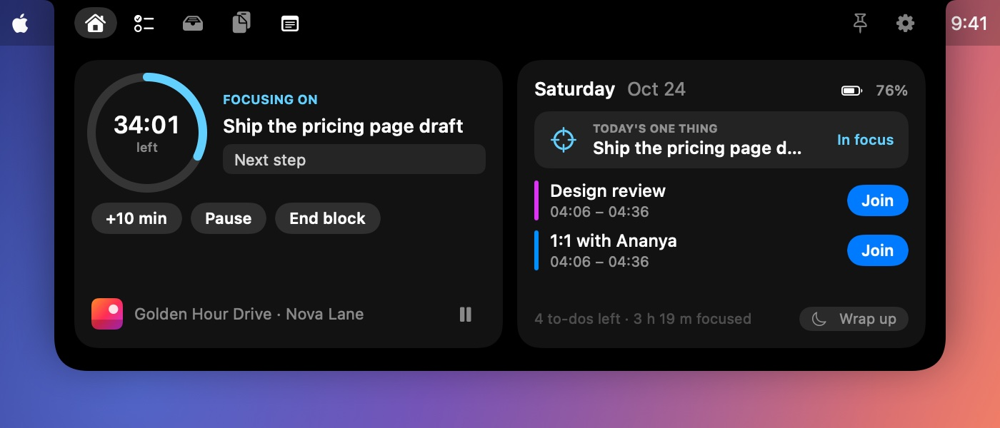
When a meeting starts mid-block, its card asks where you were. One line is enough. When the meeting ends, Hatch hands your note back, with the time you had left.
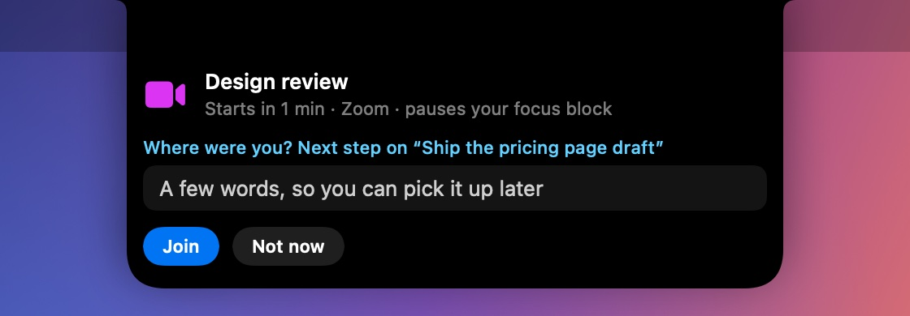
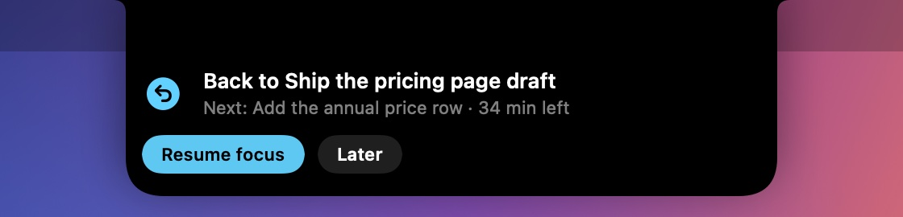
Each morning, one question: what would make today a win? Your answer stays on Home with a Focus button. At the end of the day, a short wrap-up shows what got done, then Hatch goes quiet until morning.
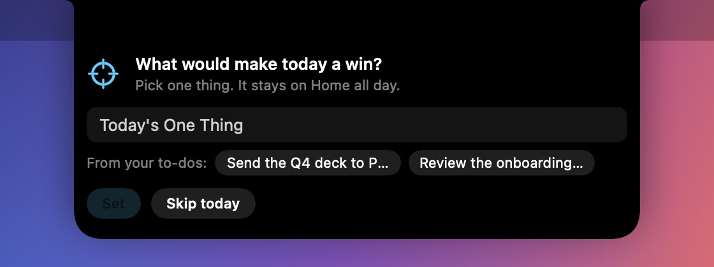
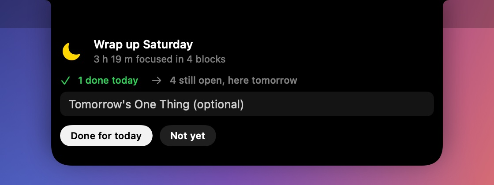
Meetings, reminders and to-dos, right where you look a hundred times a day.
Hatch reads today's calendar and finds the meeting link for you, even when it's buried in the notes or wrapped in an Outlook safe link. A minute before, a Join card drops down; during the call, the notch shows the minutes left.
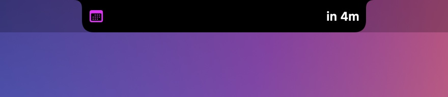
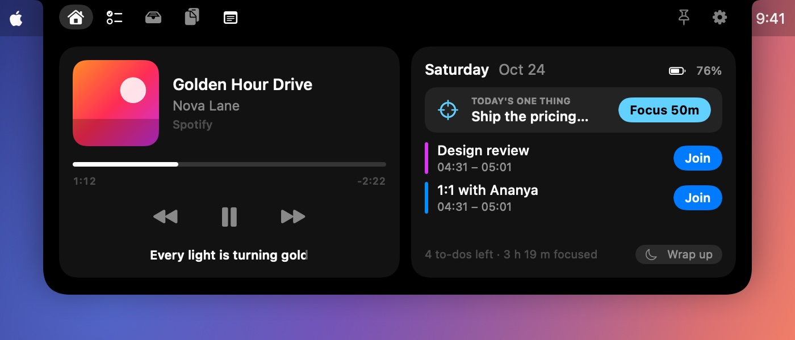
When a to-do is due, the notch drops down, shakes and chimes until you snooze it, finish it or delete it. Add to-dos from any app with ⌃⌥N: type “call the bank tomorrow 5pm” and the reminder is set for you.
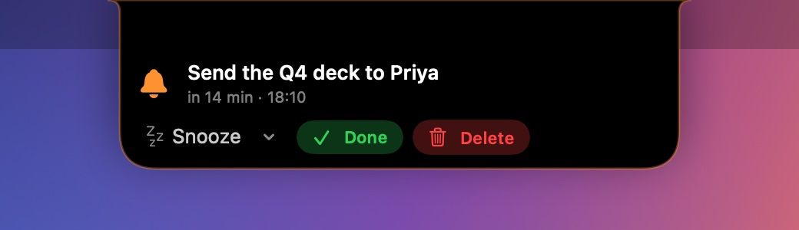
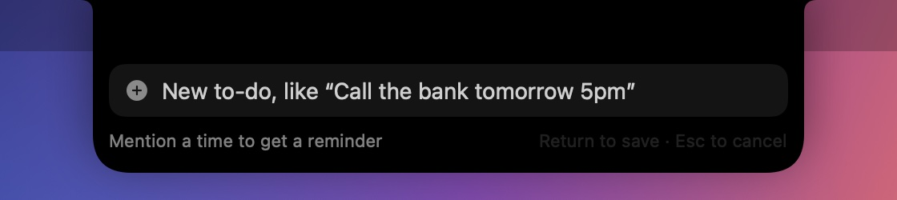
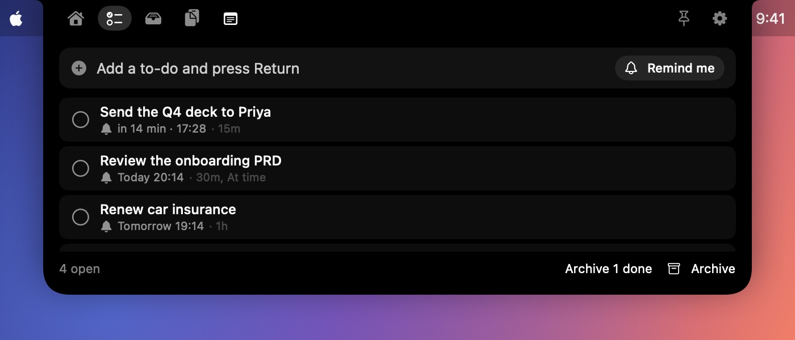
The black strip around your camera is no longer wasted. Each side shows its own thing: what's playing, a meeting countdown, or your stocks.
Apple Music, Spotify, and YouTube or any video in Safari, Chrome, Brave, Edge and Arc. See the artwork, scrub the timeline, and skip without switching apps.
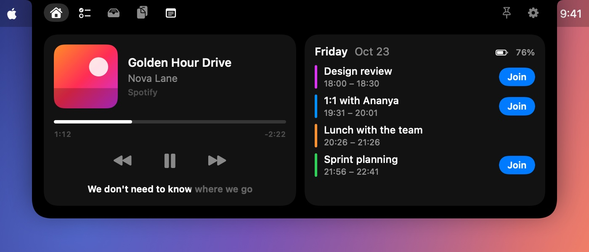
Add the stocks and indices you follow, from AAPL to RELIANCE or the NIFTY 50. Two show beside the camera with the price and today's change, then slide up to the next pair. When a meeting or a song needs one side, your tickers keep going on the other.
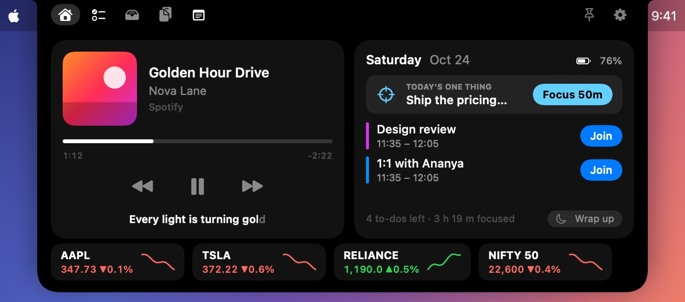
Small moments where Hatch sees what you need a second before you do. All of it runs on your Mac.
Copy “send the deck to Priya tomorrow at 4:30” from Slack or an email, and before you've switched apps the notch offers to remind you or add it to your calendar. Copy a flight number, an address or a phone number and get flight status, Maps or a call in one click.
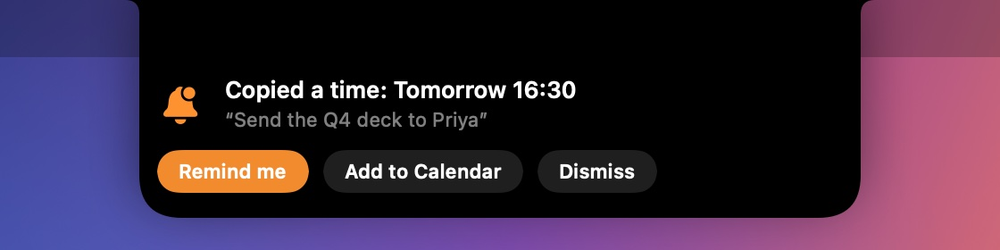
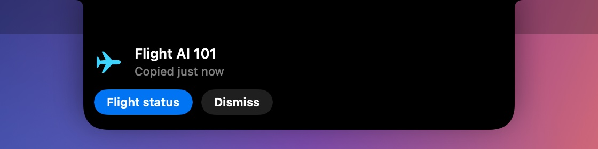
Fans spinning, battery dropping? When an app keeps your Mac busy for minutes, or swallows a huge amount of memory, the notch gives a quick buzz and tells you which one, with a button to quit it.
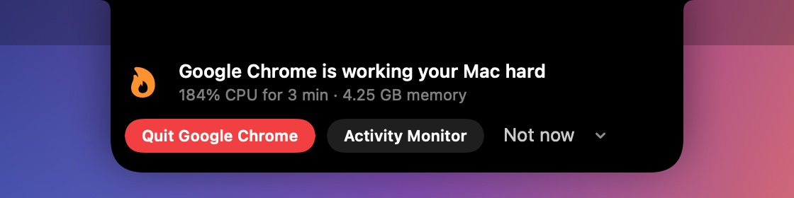
Start a line with #todo, or right-click any text, to turn it into a to-do. Mention a time and Hatch offers a reminder or a calendar event. Each day's notes can be kept in Apple Notes. Drag files onto the notch to park them, and get back anything you copied recently.
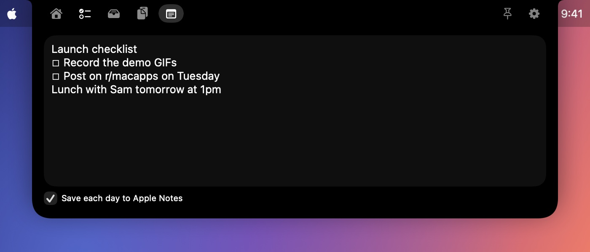
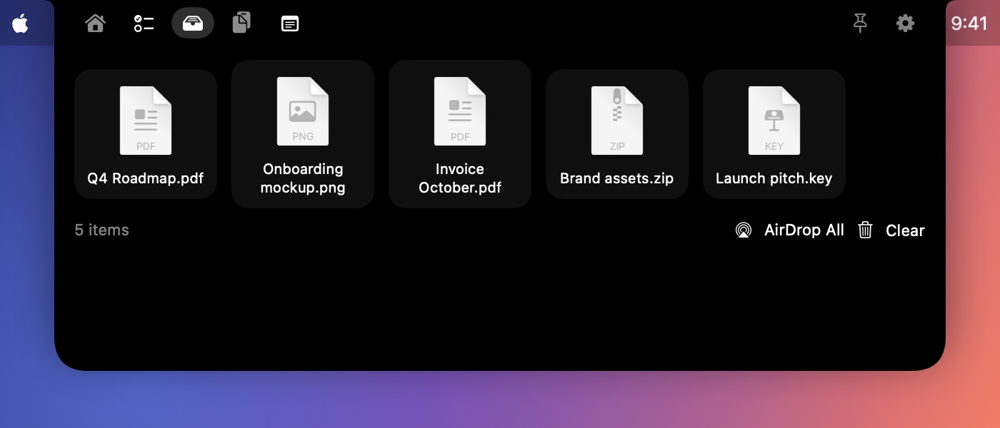
Hover, click, or press ⌃ ⌥ Space from anywhere. Pin it to keep it open.
No account, no tracking, nothing that identifies you. Hatch only goes online for artwork, lyrics and update checks, plus a once-a-day count of which version is in use.
A tiny native app written in Swift. It uses about 1% of your CPU when idle, so it barely touches your battery, and launches at login.
This early-access build isn't notarized by Apple yet, so macOS asks you to approve it once.
Click Download to get Hatch.dmg, then open it.
Drag Hatch onto the Applications folder, then open it from there.
macOS says it "could not verify" Hatch. Click Done, then go to System Settings › Privacy & Security and click Open Anyway.
Allow Calendar and media control when asked. Hatch is now living in your notch.
You only approve it once. Releases after launch will be notarized by Apple and open straight away.
Fair question, since macOS warns you about it. Here's exactly why, and how you can check for yourself.
Apple's notarization costs $99 a year. Hatch is an independent app in free early access, so this build isn't notarized yet. That means Apple hasn't scanned it, not that anything is wrong with it. Paid releases will be notarized.
Every release is uploaded to VirusTotal, where dozens of antivirus engines check it. See the report for this version.
Calendar (to show events and find join links) and permission to control Music, Spotify and your browsers (to show what's playing). No accounts, no tracking, no access to your files beyond what you drop on it. Privacy details.
Hatch 0.11.0 · Hatch.dmg · SHA-256. In Terminal, run the command below and check that it prints this exact value.
4f1710ab6ada69dd978109b8ad41ec61db8f71cc870258ebeab9ef3637838ad8
shasum -a 256 ~/Downloads/Hatch.dmg
Hatch is built by Tuhin Rawat in India. Found a bug or have an idea? Open an issue; every one gets read.
No subscription. Buy once, and Hatch keeps working, even offline and even if this website disappears.
Every feature, free until Hatch 1.0 launches (by 31 March 2027 at the latest).
7-day free trial, then a single payment.
Any Apple silicon Mac running macOS Sonoma (14) or later. It shines on MacBooks with a notch; on other displays it lives at the top centre of the screen.
Early-access builds aren't notarized by Apple yet, so macOS asks you to approve the app once in System Settings › Privacy & Security. Releases after launch will be notarized and open without the warning.
For Apple Music and Spotify, Hatch looks up time-synced lyrics on LRCLIB, a free, open lyrics database, sending only the song's title, artist, album and length. You can turn lyrics off in Settings.
Load the included browser extension in Chrome, Brave, Edge or Arc. Or turn on "Allow JavaScript from Apple Events" once in the browser (Chrome: View › Developer; Safari: Develop menu). Hatch only reads the playing video's title, time and artwork.
Nothing that identifies you. The app has no accounts and no tracking. Once a day it reports only its version number, so we know how many copies are in use; there's no ID, name or device information. Clipboard history stays in memory, and your to-dos, notes and tray files stay on your Mac. This website counts visits with Vercel Web Analytics, which uses no cookies and stores no personal data. See the privacy page.
From version 0.9.3, Hatch updates itself: it downloads new versions in the background and installs them the next time it quits, so you won't see the security prompt again. Every update is verified with Hatch's signature before it installs. You can turn this off in Settings › Updates.
In Hatch, open the menu bar icon and choose Send Feedback…. It opens a GitHub issue with your Hatch and macOS versions filled in. You can also go to myhatch.dev/feedback.
Early access is free until Hatch 1.0 launches, and no later than 31 March 2027. When it ends, early-access builds show a message inviting you to Hatch 1.0, which has a 7-day free trial and then a one-time $4.99 purchase. Your reminders keep working in the meantime. Licenses are verified on your Mac, so once you've bought it, it works for good.